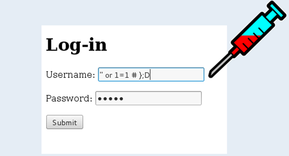

Riesgos y amenazas
Los recursos de TI están expuestos auna serie de reisgos y amenazas, estas pueden ser: Internas o externas, así también las amenazas pueden ser: Físicas o lógicas.
Los recursos de TI están expuestos auna serie de reisgos y amenazas, estas pueden ser: Internas o externas, así también las amenazas pueden ser: Físicas o lógicas.
En inglés significa “malicious software”, es un término utilizado para referirse a una variedad de software malicioso. Antes se los llamaba “virus informático”.
Es un programa que se copia a sí mismo e infecta a una computadora, después se propaga a otros archivos y luego se expande a otras computadoras cuando estos archivos contaminados son compartidos o copiados de PC a PC. Los virus corrompen los archivos.
Es un programa que recopila información de una computadora y después transmite esta información a una entidad externa sin el conocimiento o el consentimiento del propietario del computador.
Se denomina Caballo de Troya o Troyano, un software malicioso que se presenta al usuario como un programa aparentemente legítimo e inofensivo, pero que, al ejecutarlo, le brinda a un atacante acceso remoto al equipo infectado.
Los gusanos informáticos se propagan de computadora a computadora, pero a diferencia de un virus, tiene la capacidad a propagarse sin la ayuda de una persona. Los gusanos casi siempre causan problemas en la red.
Secuencia especial dentro del código de programación, mediante la cual se puede evitar los sistemas de seguridad del algoritmo para acceder al sistema. Aunque estas puertas pueden ser utilizadas para fines maliciosos y espionaje no siempre son un error, ya que pueden haber sido diseñadas con la intención de tener una entrada secreta.
Restringe el acceso a determinadas partes o archivos del sistema infectado, pide un rescate a cambio de quitar esta restricción. Algunos tipos de ransomware cifran los archivos del sistema operativo inutilizando el dispositivo y coaccionando al usuario a pagar el rescate.
La Ingeniería social es la práctica de obtener información confidencial a través de la manipulación de usuarios legítimos.
Conocido como suplantación de identidad o simplemente suplantador, es un término informático que denomina un modelo de ataque informático, que se comete mediante el uso de un tipo de ingeniería social.

Es una vulnerabilidad que permite al atacante enviar o “inyectar” instrucciones SQL de forma maliciosa y malintencionada dentro del código SQL programado para la manipulación de una bases de datos
Es un tipo de software o un dispositivo hardware específico que se encarga de registrar las pulsaciones que se realizan en el teclado, para posteriormente memorizarlas en un fichero o enviarlas a través de internet.
Obra publicada con Licencia Creative Commons Reconocimiento Compartir igual 4.0